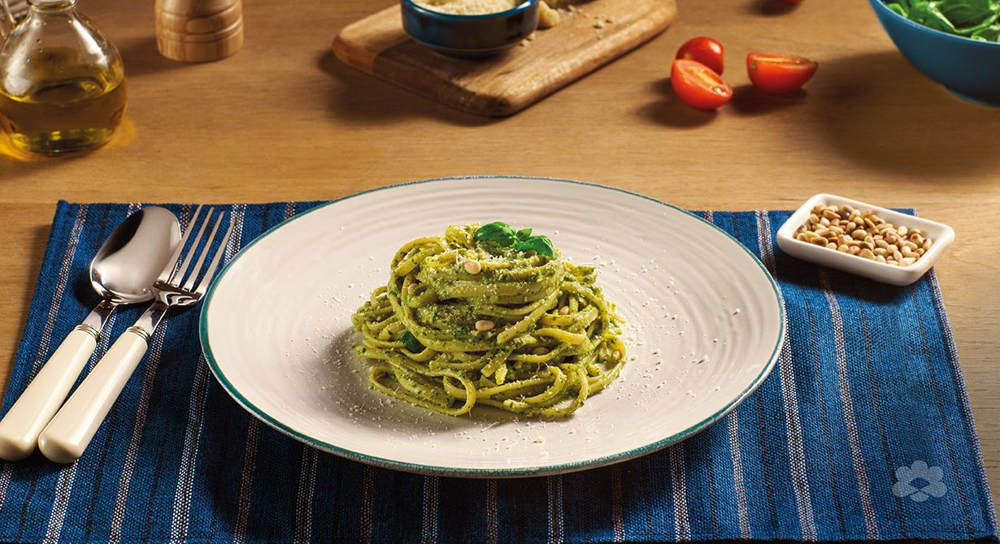
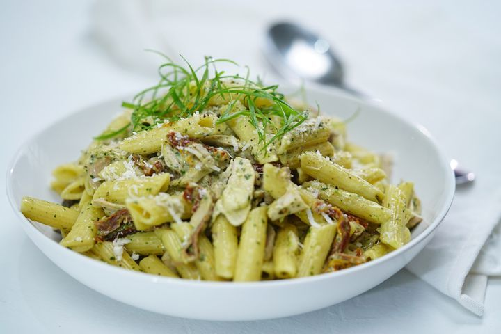

Creamy Pasta Pesto
Time required: 15 Mins
Recipie Description
A quick pasta recipe that has an aromatic taste with fresh
and toasted pine nuts blended with a tangy pesto sauce.
Carefully
prepared to ensure your family's happiness with
a rich blend of
Puck Cooking Cream, spices, and parmesan cheese
prepared within a few minutes


Ingredients
1 (16 ounce) package pasta
2 tablespoons olive oil
½ cup chopped onion
2 ½ tablespoons pesto
salt to taste
ground black pepper to taste
2 tablespoons grated Parmesan cheese

Directions
- Fill a large pot with lightly salted water
- Stir in pasta and return to a boil.
- Cook pasta uncovered, stirring occasionally, until tender yet firm to the bite, about 8 to 10 minutes.
- Drain and transfer into a large bowl.
- heat oil in a frying pan over medium-low heat. Add onion; cook and stir until softened, about 3 minutes.
- Stir in pesto, salt, and pepper until warmed through.
- Add pesto mixture to hot pasta; stir in grated cheese and toss well to coat.